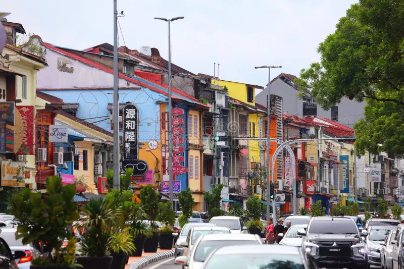

Ung Yii Jia
Computer Science Student | Cybersecurity Enthusiast | Network Security Learner
I am currently pursuing my degree in Computer Science at Universiti Teknologi Malaysia (UTM), specializing in Computer Security and Networks. My passion lies in understanding how to protect digital assets, secure network infrastructures, and mitigate cyber threats.

My Journey
Growing up in the digital age, I've always been fascinated by how computers communicate and how data moves across the globe. This curiosity led me to pursue a degree in Computer Science at UTM, where I discovered my passion for network security and cyber defense.
Throughout my studies, I've worked on various projects ranging from designing user-friendly applications to understanding the intricacies of network protocols. I believe that security should be built into systems from the ground up, not added as an afterthought.
My goal is to become a skilled cybersecurity professional who can help organizations protect their digital infrastructure and respond effectively to emerging threats. I'm constantly learning and staying updated with the latest security trends and technologies.
🌆 My hometown - Kuching, Sarawak (City of Cats)
Where I'm From

Kuching Waterfront
The heart of Kuching city, overlooking the beautiful Sarawak River.
Kolo Mee 🍜
My absolute favorite food! Egg noodles tossed in aromatic pork fat, topped with char siu and fried shallots. A taste of home!
Bako National Park
Home to proboscis monkeys and stunning rainforest trails.
Discover Kuching 🎥
Take a virtual tour of my beautiful hometown - Kuching, the Cat City of Malaysia!
My Hobby 📚
When I'm not studying networks or securing systems, you'll probably find me with my nose buried in a novel. Reading has been my escape and joy since I was young.
I enjoy a wide range of genres including:
- 🔍 Mystery & Thriller
- ⚔️ Fantasy (Brandon Sanderson, J.R.R. Tolkien)
- 🤖 Science Fiction
- 📖 Historical Fiction
Some of my favorite books include "Project Hail Mary" by Andy Weir and the "Mistborn" trilogy. Reading helps me relax, think creatively, and see problems from different perspectives.

📖 Currently reading: "The Three-Body Problem" by Liu Cixin
Education
Bachelor of Computer Science (Computer Networks and Security)
Universiti Teknologi Malaysia (UTM)
2024 - Present
CGPA: 4.00/4.00. Coursework includes Computer Networks, Computer Security and Web Programming.
Technical Skills
🔐 Security
- Network Security Basics
- Firewall Configuration
- Intrusion Detection
- Security Auditing
🌐 Networking
- TCP/IP Protocols
- Routing & Switching
- DNS & DHCP
- Wireshark Analysis
💻 Programming
- Python
- Java
- HTML/CSS
- JavaScript
🛠️ Tools
- Wireshark
- Nmap
- Metasploit (Learning)
- Figma
Certifications
Introduction to Cybersecurity
Cisco Networking Academy
2024Network Security Essentials
UTM Short Course
2024Ethical Hacking Beginner
EC-Council (Self-paced)
2025